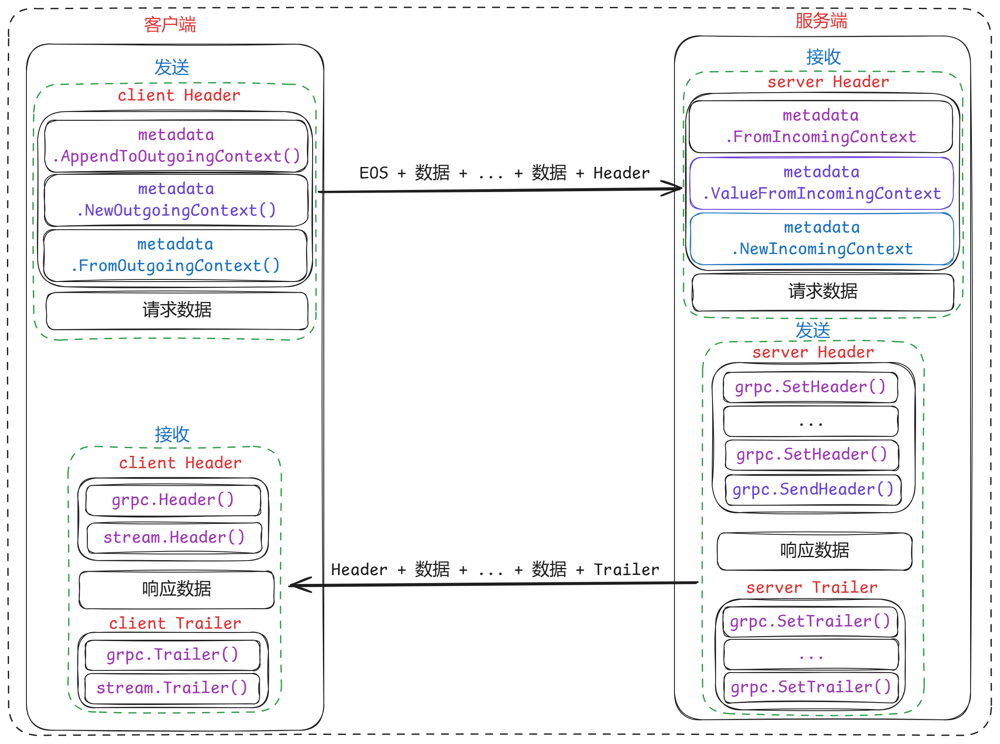

Metadata 元数据
- gRPC 允许发送自定义元数据。元数据是键值对的一个非常简单的概念。
- 在 Go gRPC 中，元数据是一个 map[string][]string。
- 元数据可以作为 header 或 trailer 发送：
- header 应该在数据之前发送。
- trailer 应在处理完毕后发送。
- 元数据允许我们在不更改 protobuf 消息的情况下向请求中添加数据。通常用于添加与请求相关但不属于请求的数据。
- 例如，我们可以在请求的元数据中添加 JWT 令牌作为身份验证。这对于身份验证、速率限制或日志记录很有用。
- 官方Go metadata文档：https://pkg.go.dev/google.golang.org/grpc/metadata
metadata 创建
- 使用 New()：
md := metadata.New(map[string]string{"key1":"value1","key2":"value2"})
- 使用 Pairs()：注意如果有相同的 key 会自动合并
md := metadata.Pairs(
"key1", "value1",
"key1", "value1.2", // "key1" will have map value []string{"value1", "value1.2"}
"key2", "value2",
)
- 使用 Join()：
md1 := metadata.Pairs("k1", "v1", "k2", "v2")
md2 := metadata.New(map[string]string{"key1":"value1","key2":"value2"})
md := metadata.Join(md1, md2)
- 存储二进制数据。
- 在 metadata 中，key 永远是 string 类型，但是 value 可以是 string 也可以是二进制数据。为了在 metadata 中存储二进制数据，我们仅仅需要在 key 的后面加上一个 - bin 后缀。具有 - bin 后缀的 key 所对应的 value 在创建 metadata 时会被编码（base64），收到的时候会被解码：
md := metadata.Pairs(
"key", "string value",
"key-bin", string([]byte{96, 102}),
)
客户端发送 metadata
- client发送metadata，那就是把metadata存储到contex.Context。
- 把Metadata放到contex.Context，有几种方式。
NewOutgoingContext
- 将新创建的metadata添加到context中，这样会 覆盖 掉原来已有的metadata
// 将metadata添加到context中，获取新的context
md := metadata.Pairs("k1", "v1", "k1", "v2", "k2", "v3")
ctx := metadata.NewOutgoingContext(context.Background(), md)
// unary RPC
response, err := client.SomeRPC(ctx, someRequest)
// streaming RPC
stream, err := client.SomeStreamingRPC(ctx)
AppendToOutgoingContext
- 可以直接将 key-value 对添加到已有的context中
- 如果context中没有metadata，那么就会 创建 一个
- 如果已有metadata，那么就将数据 添加 到原来的metadata
// 如果对应的 context 没有 metadata，那么就会创建一个
ctx := metadata.AppendToOutgoingContext(ctx, "k1", "v1", "k1", "v2", "k2", "v3")
// 如果已有 metadata 了，那么就将数据添加到原来的 metadata (例如在拦截器中)
ctx := metadata.AppendToOutgoingContext(ctx, "k3", "v4")
// 普通RPC（unary RPC）
response, err := client.SomeRPC(ctx, someRequest)
// 流式RPC（streaming RPC）
stream, err := client.SomeStreamingRPC(ctx)
服务端接收 meatdata
- server接收metadata，就是从contex.Context中读取Metadata。
- 普通RPC与流式RPC的区别不大，都是从contex.Context中读取metadata。
FromIncomingContext
- 普通RPC（unary RPC）
//Unary Call
func (s *server) SomeRPC(ctx context.Context, in *pb.someRequest) (*pb.someResponse, error) {
md, ok := metadata.FromIncomingContext(ctx)
// do something with metadata
}
- 流式RPC（streaming RPC）
//Streaming Call
func (s *server) SomeStreamingRPC(stream pb.Service_SomeStreamingRPCServer) error {
md, ok := metadata.FromIncomingContext(stream.Context()) // get context from stream
// do something with metadata
}
服务端发送 metadata
- 服务端发送的metadata被分成了header和 trailer两者，因而客户端也可以读取两者。
- 对于普通RPC（unary RPC）server可以使用grpc包中提供的函数向client发送 header 和trailer。
- grpc.SendHeader()
- grpc.SetHeader()
- grpc.SetTrailer()
- 对于流式RPC（streaming RPC）server可以使用ServerStream[1]接口中定义的函数向client发送header和 trailer。
- ServerStream.SendHeader()
- ServerStream.SetHeader()
- ServerStream.SetTrailer()
普通RPC
- 使用 grpc.SendHeader() 和 grpc.SetTrailer() 方法 ，这两个函数将context.Context作为第一个参数
func (s *server) SomeRPC(ctx context.Context, in *pb.someRequest) (*pb.someResponse, error) {
// 创建并发送header
header := metadata.Pairs("header-key", "val")
grpc.SendHeader(ctx, header)
// 创建并发送trailer
trailer := metadata.Pairs("trailer-key", "val")
grpc.SetTrailer(ctx, trailer)
}
- 如果不想立即发送header，也可以使用grpc.SetHeader()。grpc.SetHeader()可以被多次调用，在如下时机会把多个metadata合并发送出去。
func (s *server) SomeRPC(ctx context.Context, in *pb.someRequest) (*pb.someResponse, error) {
// 创建header，在适当时机会被发送
header := metadata.Pairs("header-key1", "val1")
grpc.SetHeader(ctx, header)
// 创建header，在适当时机会被发送
header := metadata.Pairs("header-key2", "val2")
grpc.SetHeader(ctx, header)
// 创建并发送trailer
trailer := metadata.Pairs("trailer-key", "val")
grpc.SetTrailer(ctx, trailer)
}
流式RPC
- 使用 ServerStream.SendHeader() 和 ServerStream.SetTrailer() 方法
func (s *server) SomeStreamingRPC(stream pb.Service_SomeStreamingRPCServer) error {
// create and send header
header := metadata.Pairs("header-key", "val")
stream.SendHeader(header)
// create and set trailer
trailer := metadata.Pairs("trailer-key", "val")
stream.SetTrailer(trailer)
}
- 如果不想立即发送header，也可以使用ServerStream.SetHeader()。ServerStream.SetHeader()可以被多次调用，在如下时机会把多个metadata合并发送出去。
func (s *server) SomeStreamingRPC(stream pb.Service_SomeStreamingRPCServer) error {
// create and send header
header := metadata.Pairs("header-key", "val")
stream.SetHeader(header)
// create and set trailer
trailer := metadata.Pairs("trailer-key", "val")
stream.SetTrailer(trailer)
}
客户端接收 metadata
普通RPC
- 普通RPC（unary RPC）使用grpc.Header()和grpc.Trailer()方法来接收 Metadata
// RPC using the context with new metadata.
var header, trailer metadata.MD
// Add Order
order := pb.Order{Id: "101", Items: []string{"iPhone XS", "Mac Book Pro"}, Destination: "San Jose, CA", Price: 2300.00}
res, err := client.AddOrder(ctx, &order, grpc.Header(&header), grpc.Trailer(&trailer))
if err != nil {
panic(err)
}
流式RPC
- 流式RPC（streaming RPC）通过调用返回的 ClientStream接口的Header()和 Trailer()方法接收 metadata
stream, err := client.SomeStreamingRPC(ctx)
// retrieve header
header, err := stream.Header()
stream.CloseAndRecv()
// retrieve trailer
trailer := stream.Trailer()

google.golang.org/grpc/metadata
func AppendToOutgoingContext
- AppendToOutgoingContext返回一个新的上下文，其中提供的kv与上下文中的任何现有元数据合并。
- 用于向现有的上下文中追加新的元数据。这通常用于在客户端发送请求时添加额外的元数据。
// AppendToOutgoingContext returns a new context with the provided kv merged
// with any existing metadata in the context. Please refer to the documentation
// of Pairs for a description of kv.
func AppendToOutgoingContext(ctx context.Context, kv ...string) context.Context {
if len(kv)%2 == 1 {
panic(fmt.Sprintf("metadata: AppendToOutgoingContext got an odd number of input pairs for metadata: %d", len(kv)))
}
md, _ := ctx.Value(mdOutgoingKey{}).(rawMD)
added := make([][]string, len(md.added)+1)
copy(added, md.added)
kvCopy := make([]string, 0, len(kv))
for i := 0; i < len(kv); i += 2 {
kvCopy = append(kvCopy, strings.ToLower(kv[i]), kv[i+1])
}
added[len(added)-1] = kvCopy
return context.WithValue(ctx, mdOutgoingKey{}, rawMD{md: md.md, added: added})
}
- 以下是 metadata.AppendToOutgoingContext 的使用方式：
package main
import (
"context"
"log"
"google.golang.org/grpc"
"google.golang.org/grpc/metadata"
)
func main() {
// 创建一个空元数据对象
md := metadata.New(nil)
// 添加自定义键值对
md.Append("custom-header", "custom-value")
// 创建一个上下文
ctx := context.Background()
// 将元数据追加到上下文中
ctx = metadata.AppendToOutgoingContext(ctx, md)
// 创建客户端连接
conn, err := grpc.Dial("localhost:50051", grpc.WithInsecure(), grpc.WithContextDialer(dialer))
if err != nil {
log.Fatalf("failed to dial: %v", err)
}
defer conn.Close()
// 创建客户端实例
c := NewYourServiceClient(conn)
// 使用追加了元数据的上下文发送请求
resp, err := c.YourRPCMethod(ctx, &YourRequest{})
if err != nil {
log.Fatalf("could not call: %v", err)
}
// 使用响应
// ...
}
- 在这个例子中，我们首先创建了一个空的元数据对象 md，然后使用 metadata.Append 函数添加了一些自定义的键值对。接着，我们使用 metadata.AppendToOutgoingContext 函数将这个元数据追加到上下文中。最后，我们使用这个带有追加元数据的上下文来创建 gRPC 客户端并发送请求。
- 请注意，metadata.AppendToOutgoingContext 函数不会覆盖上下文中已存在的元数据，而是会追加新的元数据。如果你需要覆盖已存在的元数据，可以使用 metadata.NewOutgoingContext 函数。
// 如果对应的 context 没有 metadata，那么就会创建一个
ctx := metadata.AppendToOutgoingContext(ctx, "k1", "v1", "k1", "v2", "k2", "v3")
// 如果已有 metadata 了，那么就将数据添加到原来的 metadata (例如在拦截器中)
ctx := metadata.AppendToOutgoingContext(ctx, "k3", "v4")
// 普通RPC（unary RPC）
response, err := client.SomeRPC(ctx, someRequest)
// 流式RPC（streaming RPC）
stream, err := client.SomeStreamingRPC(ctx)
func NewOutgoingContext
- NewOutgoingContext创建一个带有外发md的新上下文。
- 如果与AppendToOutgoingContext一起使用，NewOutgoingContext将覆盖任何先前附加的元数据。
- 在调用此函数后不能修改Md。
- NewOutgoingContext 会覆盖之前数据，但是后面可以使用 AppendToOutgoingContext 追加数据。
// NewOutgoingContext creates a new context with outgoing md attached. If used
// in conjunction with AppendToOutgoingContext, NewOutgoingContext will
// overwrite any previously-appended metadata. md must not be modified after
// calling this function.
func NewOutgoingContext(ctx context.Context, md MD) context.Context {
return context.WithValue(ctx, mdOutgoingKey{}, rawMD{md: md})
}
- 客户端使用示例：
// 将新创建的metadata添加到context中，这样会 覆盖 掉原来已有的metadata
// 将metadata添加到context中，获取新的context
md := metadata.Pairs("k1", "v1", "k1", "v2", "k2", "v3")
ctx := metadata.NewOutgoingContext(context.Background(), md)
// unary RPC
response, err := client.SomeRPC(ctx, someRequest)
// streaming RPC
stream, err := client.SomeStreamingRPC(ctx)
func NewIncomingContext
- NewIncomingContext创建一个带有传入md的新上下文。在调用此函数后不能修改Md。
- 该函数用于服务端，追加md到之前的ctx中。
// NewIncomingContext creates a new context with incoming md attached. md must
// not be modified after calling this function.
func NewIncomingContext(ctx context.Context, md MD) context.Context {
return context.WithValue(ctx, mdIncomingKey{}, md)
}
func ValueFromIncomingContext
- ValueFromIncomingContext返回与传入元数据键对应的元数据值(如果存在)。键匹配不区分大小写。
- 该函数用于服务端，从传入的ctx中取出指定的key。
// ValueFromIncomingContext returns the metadata value corresponding to the metadata
// key from the incoming metadata if it exists. Keys are matched in a case insensitive
// manner.
func ValueFromIncomingContext(ctx context.Context, key string) []string {
md, ok := ctx.Value(mdIncomingKey{}).(MD)
if !ok {
return nil
}
if v, ok := md[key]; ok {
return copyOf(v)
}
for k, v := range md {
// Case insensitive comparison: MD is a map, and there's no guarantee
// that the MD attached to the context is created using our helper
// functions.
if strings.EqualFold(k, key) {
return copyOf(v)
}
}
return nil
}
type MD
- MD是从元数据键到值的映射。用户应该使用以下两个方便的函数New和Pairs来生成MD。
type MD map[string][]string
func FromIncomingContext
- 如果ctx存在，FromIncomingContext返回传入的元数据。
- 返回的MD中的所有键都是小写的。
- 该函数用于服务端从ctx中接收客户端传来的 Header。
// FromIncomingContext returns the incoming metadata in ctx if it exists.
//
// All keys in the returned MD are lowercase.
func FromIncomingContext(ctx context.Context) (MD, bool) {
md, ok := ctx.Value(mdIncomingKey{}).(MD)
if !ok {
return nil, false
}
out := make(MD, len(md))
for k, v := range md {
// We need to manually convert all keys to lower case, because MD is a
// map, and there's no guarantee that the MD attached to the context is
// created using our helper functions.
key := strings.ToLower(k)
out[key] = copyOf(v)
}
return out, true
}
- 服务端使用：
// 从传入上下文获取元数据
md, ok := metadata.FromIncomingContext(ctx)
if !ok {
return nil, fmt.Errorf("上下文中没有元数据")
}
func FromOutgoingContext
- FromOutgoingContext返回ctx形式的传出元数据(如果存在)。
- 返回的MD中的所有键都是小写的。
- 用于客户端，比如客户端拦截器中，获取发送给服务器的 metadata。
// FromOutgoingContext returns the outgoing metadata in ctx if it exists.
//
// All keys in the returned MD are lowercase.
func FromOutgoingContext(ctx context.Context) (MD, bool) {
raw, ok := ctx.Value(mdOutgoingKey{}).(rawMD)
if !ok {
return nil, false
}
mdSize := len(raw.md)
for i := range raw.added {
mdSize += len(raw.added[i]) / 2
}
out := make(MD, mdSize)
for k, v := range raw.md {
// We need to manually convert all keys to lower case, because MD is a
// map, and there's no guarantee that the MD attached to the context is
// created using our helper functions.
key := strings.ToLower(k)
out[key] = copyOf(v)
}
for _, added := range raw.added {
if len(added)%2 == 1 {
panic(fmt.Sprintf("metadata: FromOutgoingContext got an odd number of input pairs for metadata: %d", len(added)))
}
for i := 0; i < len(added); i += 2 {
key := strings.ToLower(added[i])
out[key] = append(out[key], added[i+1])
}
}
return out, ok
}
- 客户端拦截器中：
func orderUnaryClientInterceptor(ctx context.Context, method string, req, reply interface{},
cc *grpc.ClientConn, invoker grpc.UnaryInvoker, opts ...grpc.CallOption) error {
var s string
// 获取要发送给服务端的`metadata`
md, ok := metadata.FromOutgoingContext(ctx)
if ok && len(md.Get("time")) > 0 {
s = md.Get("time")[0]
} else {
// 如果没有则补充这个时间戳字段
s = "inter" + strconv.FormatInt(time.Now().UnixNano(), 10)
ctx = metadata.AppendToOutgoingContext(ctx, "time", s)
}
log.Printf("call timestamp: %s", s)
// Invoking the remote method
err := invoker(ctx, method, req, reply, cc, opts...)
return err
}
func New
- New从给定的键值映射创建一个MD。
- key中只允许使用以下ASCII字符：
- 数字：0-9
- 大写字母：A-Z
- 小写字母：a-z
- 特殊字符：- _ .
- 大写字母会自动转换为小写字母。
- 以“grpc-”开头的键仅供grpc内部使用，如果在元数据中设置可能会导致错误。
// New creates an MD from a given key-value map.
//
// Only the following ASCII characters are allowed in keys:
// - digits: 0-9
// - uppercase letters: A-Z (normalized to lower)
// - lowercase letters: a-z
// - special characters: -_.
//
// Uppercase letters are automatically converted to lowercase.
//
// Keys beginning with "grpc-" are reserved for grpc-internal use only and may
// result in errors if set in metadata.
func New(m map[string]string) MD {
md := make(MD, len(m)) // map[string][]string
for k, val := range m { // string,string
key := strings.ToLower(k)
md[key] = append(md[key], val)
}
return md
}
- 使用示例：
md := metadata.New(map[string]string{"key1":"value1","key2":"value2"})
func Pairs
- pair返回一个由key, value…如果len(kv)是奇数，Pairs 就会 panic。
- key中只允许使用以下ASCII字符:
- 数字：0-9
- 大写字母：A-Z
- 小写字母：a-z
- 特殊字符：- _ .
- 数字：0-9
- 大写字母会自动转换为小写字母。
- 以“grpc-”开头的键仅供grpc内部使用，如果在元数据中设置可能会导致错误。
- 如果有相同的 key 会自动合并。
// Pairs returns an MD formed by the mapping of key, value ...
// Pairs panics if len(kv) is odd.
//
// Only the following ASCII characters are allowed in keys:
// - digits: 0-9
// - uppercase letters: A-Z (normalized to lower)
// - lowercase letters: a-z
// - special characters: -_.
//
// Uppercase letters are automatically converted to lowercase.
//
// Keys beginning with "grpc-" are reserved for grpc-internal use only and may
// result in errors if set in metadata.
func Pairs(kv ...string) MD {
if len(kv)%2 == 1 {
panic(fmt.Sprintf("metadata: Pairs got the odd number of input pairs for metadata: %d", len(kv)))
}
md := make(MD, len(kv)/2) // map[string][]string
for i := 0; i < len(kv); i += 2 {
key := strings.ToLower(kv[i])
md[key] = append(md[key], kv[i+1])
}
return md
}
- 使用示例：
md := metadata.Pairs(
"key1", "value1",
"key1", "value1.2", // "key1" will have map value []string{"value1", "value1.2"}
"key2", "value2",
)
func Join
- Join将任意数量的mds连接到单个MD中。
- 每个键的值顺序由包含这些值的mds呈现给Join的顺序决定。
// Join joins any number of mds into a single MD.
//
// The order of values for each key is determined by the order in which the mds
// containing those values are presented to Join.
func Join(mds ...MD) MD {
out := MD{} // []map[string][]string
for _, md := range mds { // int,map[string][]string
for k, v := range md { // string,[]string
out[k] = append(out[k], v...)
}
}
return out
}
- 使用示例：
md1 := metadata.Pairs("k1", "v1", "k2", "v2")
md2 := metadata.New(map[string]string{"key1":"value1","key2":"value2"})
md := metadata.Join(md1, md2)
func (MD) Append
- Append将值添加到键k中，而不是覆盖已经存储在该键中的内容。
- K在存储到md之前被转换为小写。
// Append adds the values to key k, not overwriting what was already stored at
// that key.
//
// k is converted to lowercase before storing in md.
func (md MD) Append(k string, vals ...string) {
if len(vals) == 0 {
return
}
k = strings.ToLower(k)
md[k] = append(md[k], vals...)
}
- 使用示例：
md := metadata.New(map[string]string{"key1":"value1","key2":"value2"})
md.Append("key1", "v1", "v2")
func (MD) Copy
- Copy返回md的副本。
// Copy returns a copy of md.
func (md MD) Copy() MD {
out := make(MD, len(md))
for k, v := range md {
out[k] = copyOf(v)
}
return out
}
func (MD) Delete
- Delete删除给定键k的值，该键k在从md中删除之前被转换为小写。
// Delete removes the values for a given key k which is converted to lowercase
// before removing it from md.
func (md MD) Delete(k string) {
k = strings.ToLower(k)
delete(md, k)
}
func (MD) Get
- Get获取给定键的值。
- 在md中搜索之前，K被转换为小写。
// Get obtains the values for a given key.
//
// k is converted to lowercase before searching in md.
func (md MD) Get(k string) []string {
k = strings.ToLower(k)
return md[k]
}
func (MD) Len
- Len返回md中的项数。
// Len returns the number of items in md.
func (md MD) Len() int {
return len(md)
}
func (MD) Set
- Set用一个值片来设置给定键的值。
- K在存储到md之前被转换为小写。
// Set sets the value of a given key with a slice of values.
//
// k is converted to lowercase before storing in md.
func (md MD) Set(k string, vals ...string) {
if len(vals) == 0 {
return
}
k = strings.ToLower(k)
md[k] = vals
}